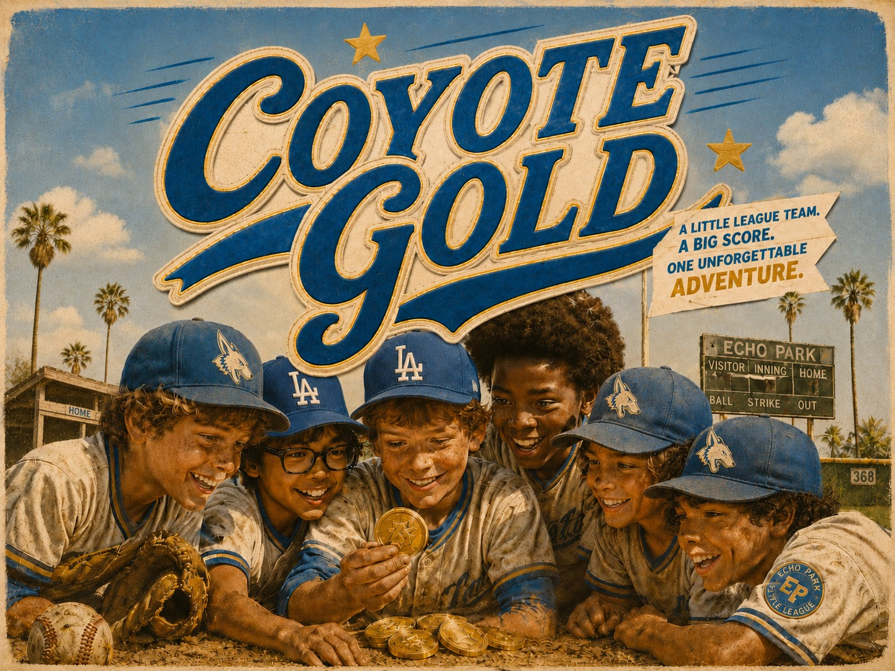
There's a 150-year-old real-life treasure buried under Dodger Stadium. The only people who've figured out where?
The losingest Little League team in Los Angeles.
An all-ages adventure
It's a Tuesday night in July and the Coyotes are losing. Again. Down by nine, mercy-rule losing. Half the parents have already thrown in the towel and wandered back to their cars. Nothing new for a team that hasn't won a game in years.
Worse, this is the Coyotes' last season. Their field — crooked fence, bald patches, a clubhouse nobody's fixed in decades — is headed for the bulldozers when summer ends. One more old LA corner about to become condos. Up the hill, lit up and roaring, sits Dodger Stadium — close enough to hear, a million miles out of reach.
But then…they find the map.
Tucked into the lining of a cracked old catcher's mitt, hand-drawn and fraying at the edges. Every kid who's ever played on this field grew up on the legend — a fortune buried back when Los Angeles was a dusty pueblo, hidden somewhere in the Elysian hills. Every Coyote who went looking came back with nothing.
Until now.

When the kids lay the brittle page over a projected map of the city, the crisscrossing lines start making sense; and a madcap hunt yanks them into the forgotten parts of Los Angeles — abandoned aqueducts in the hills, a boarded-up sanatorium with empty wards and haunted halls, secret Prohibition tunnels running under Dodger Stadium.
The older kids swear the treasure is cursed. Nico, the youngest, is convinced it's guarded by totally-real, look-it-up Los Angeles Lizard People who eat kids for breakfast.
"Dope, let's get this money," Theo says.
Chaos and calamity ensue.
Especially once they realize they're not the only ones digging for treasure.
A ruthless operator named Ascher is hunting the same prize, along with two bumbling but dangerous hired hands who have zero problem putting kids in their place…and in the ground.
What follows is a scrappy, Home Alone-style war — pitching machines turned into cannons, batting nets dropped like jungle traps, and heart-pounding getaways on bikes and skateboards down the concrete channels of the LA River.
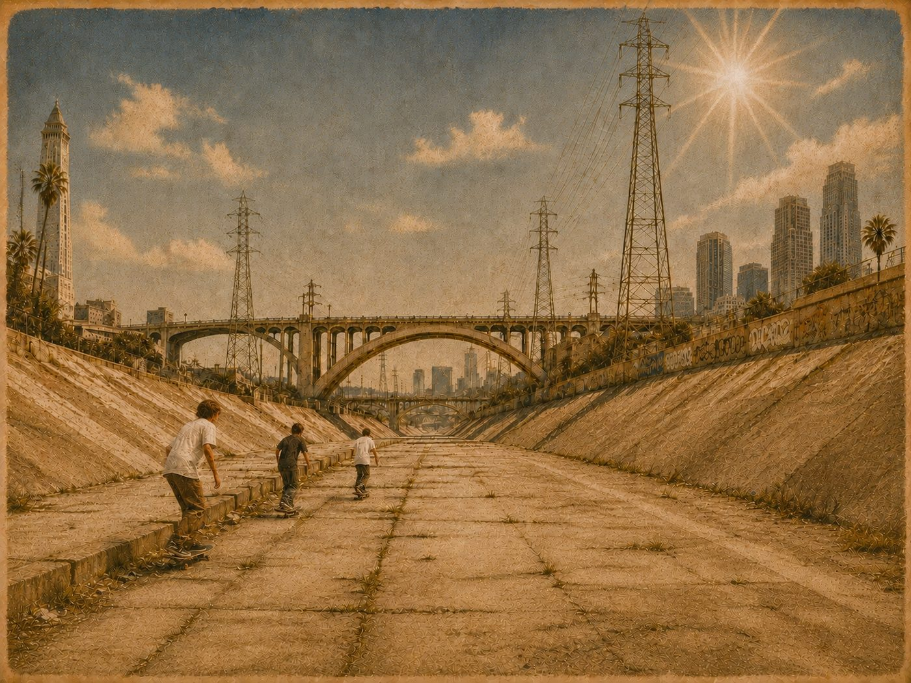
Amid the thrills and scares, something transforms. Nine kids who had given up on each other start believing in the impossible. They start working together. Trusting each other. Believing. And they carry it all back onto the field.
Somehow the worst team in the league starts winning — squeakers at first, then blowouts, and playoff games nobody thought they had any business even playing. Eli swears it's because of the beat-up charm they found in the tunnels. But his dad Sal, the Coyotes' coach, senses it's something else entirely. For the first time, they actually look like a real team.
The X has marked a secret spot in the Elysian hills for more than 150 years — and when our kids finally crack the code, it leads to the most unimaginable place imaginable.
Right under Dodger Stadium.
The only way a kid ever gets on that field is by winning the one Little League game played there each year. The Championship.
So the Coyotes have to claw their way to a title shot against wealthy westside arch-rivals who've crushed them year after year. All while Ascher and his crew close in from below and bulldozers idle back home.
It'll all come down to one final game, with everything they love on the line…under the lights of Blue Heaven.
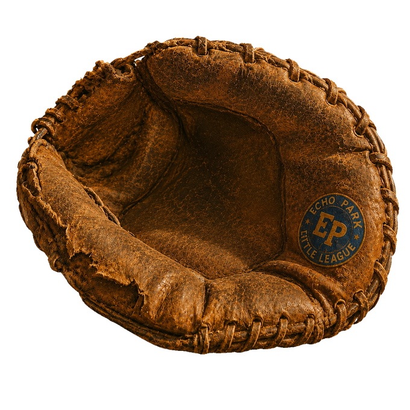
Detailed Playbook
The Story., inning by inning.
 First Pitch
First Pitch
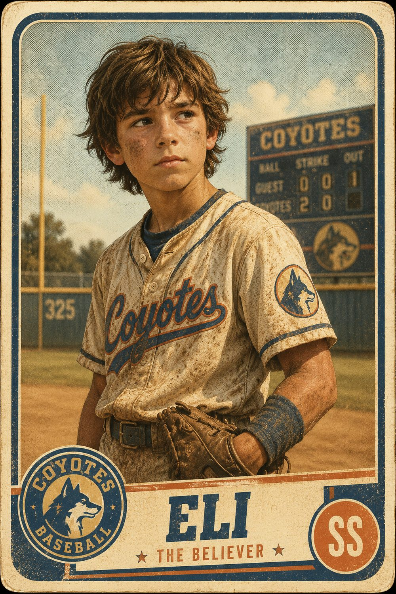
The Coyotes are getting shellacked by their arch-enemies. Again. Down by nine runs, mercy rule looming, half the parents already drifting toward the parking lot. This is their last season on this field, and the mood is raw. Their crooked little diamond — patchy grass, sagging chain-link, a clubhouse that hasn't been properly cleaned since the eighties — is due for the bulldozers when summer ends.
Eli, the coach's kid, hangs back after the game. Baseball means more to him than he lets on, but he carries a quiet guilt for never living up to his father, Sal, who came one knee-injury short of the pros and clearly had been hoping his son would carry the torch.
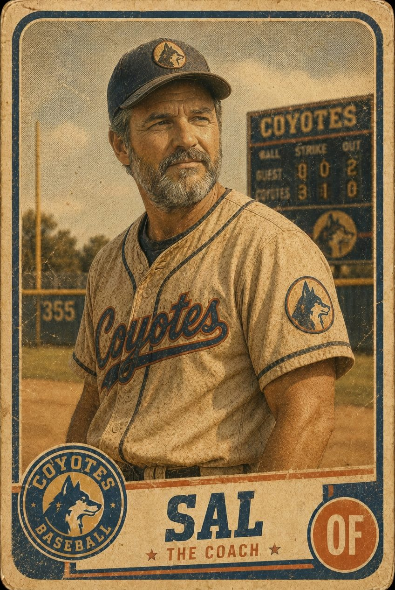
After the game, father and son are clearing out the Den together, and it's bitter-not-sweet — fifty years of bent bats, gap-toothed team photos, a cobwebbed box of baseballs somebody once labeled LUCKY that was anything but. And at the bottom of that box…a beat-up catcher's mitt with something sewn into the lining.
 Reading the Signs
Reading the Signs
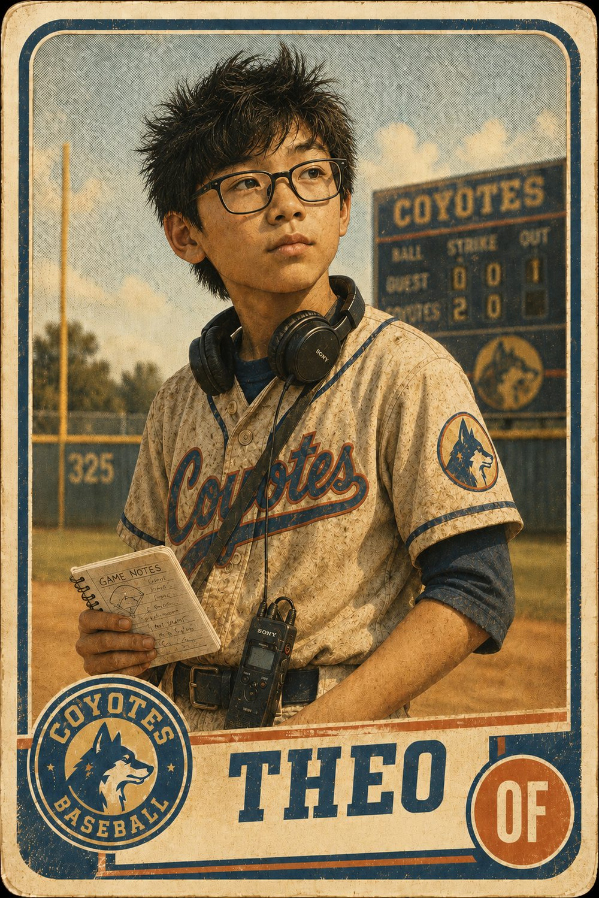
It's the old legend every kid on this field grew up on — buried gold from the pueblo days, supposedly worth millions, hidden somewhere up in the Elysian Hills. In most versions of the tale there are ghosts and skeletons and monsters. In small-fry Nico's version there's a curse that'll haunt them for the rest of their lives and afterlives, I swear guys, don't even mess around with this.
The margins of the ancient document are crowded with handwritten notes and little baseball ciphers from some long-gone Coyote who must've chased it himself. Theo, the technical brains of the operation, builds an overlay against the modern city — the old lines drop over recognizable streets, pointing to, of all places…the Barlow Sanatorium, just above the stadium.
For Danny, Eli's best friend, there's no debate. They're going after it, and they're going now. His family's getting priced out of the canyon, and if nothing changes they'll be packing a truck before the season's even over. Paydirt gold might be his only hope.
Eli concurs. On the verge of adulthood, he's holding onto the last vestiges of wonder; so if magical thinking is the key to saving their field and making up for a father's disappointments, then he's full gas.
 Deep in the Count
Deep in the Count
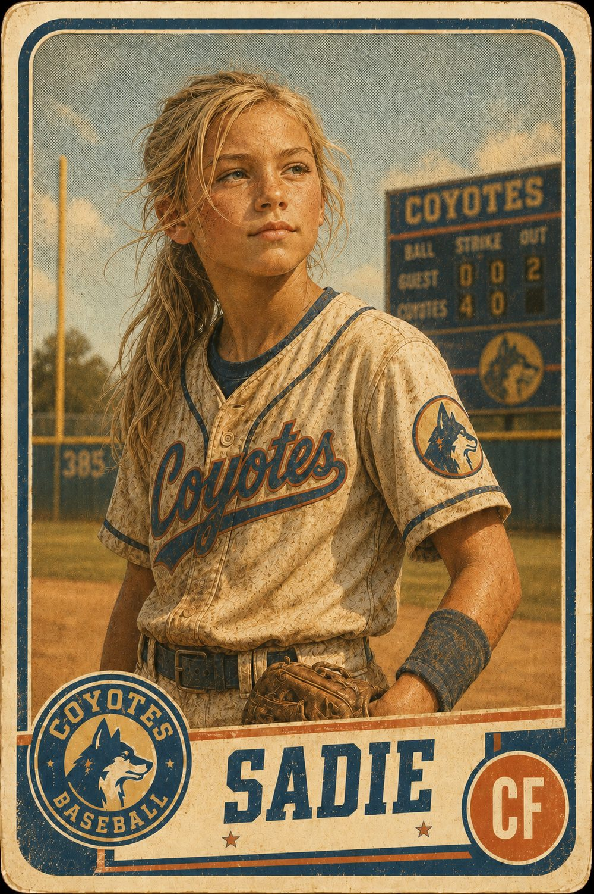
Under the old Barlow, they drop into the dark — storm drains and brick channels nobody's set foot in for a hundred years. Theo, who's prepared his whole life for something like this, has the place mapped on his phone before they're ten feet down. Nico keeps a running tally of everything down here that can kill them, Lizard People at the top. Sadie, the center fielder whose parents are splitting up and who's carried that anger all summer, wants to call the whole thing off — this is childish insanity, isn't it time to grow up already?
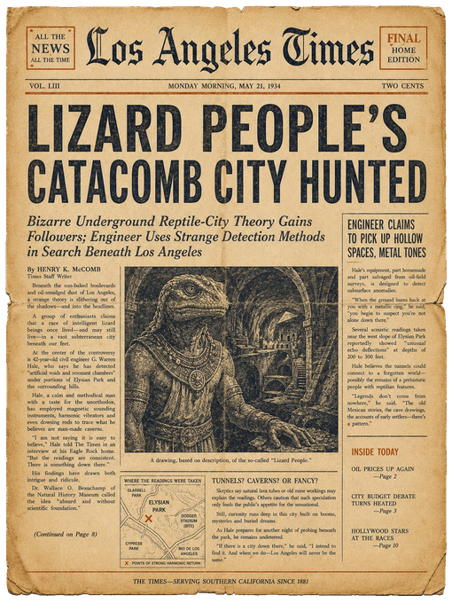
They bicker, they get lost, they completely melt down. Just like on the field. These coyotes are not a pack.
But Eli leads on, and soon enough they crack a seismic cipher in the walls, opening a chamber that hasn't seen light in 150 years. Are they actually onto something…?
 The Lucky Charm
The Lucky Charm
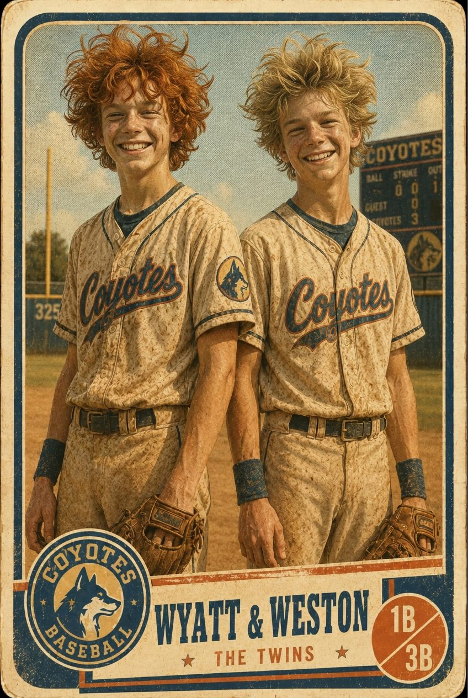
Pushing deeper, it's the twins — Wyatt and Weston, big redheaded goofballs, the only reason this team wins anything — who find it. Half-buried in fossilized brick…a medallion, pierced through the top, an ancient symbol carved deep into its face. A gold medallion!
And the symbol matches the map identically. For a split second they lose their minds — holy bananaballs, they actually found it!
Until Sadie bites it and spits. "Fool's gold, schlosers." She's right. It's not gold, and collective hope sinks into cavern rocks. But Theo and Eli won't let it rest — an ancient symbol that matches the map, down to the last blot of ink?! That can't be a coincidence. Can it???
Their somber return to the surface brings real-world stakes and renewed Stand by Me fears. In a collective raw moment it dawns on each of them that these are their last moments together, before everything changes forever.
And for once, there's no bickering. Just heartfelt awareness, gentle kinship, and an echoing coyote howl of camaraderie.
 Hot Streak
Hot Streak
A day later, they win their first playoff game against a team that was already penciled in as a dead-to-rights L. It's a miracle in the bottom of the ninth when the twins send back-to-back gunners that bring in Sadie and Theo. Eli and Danny are convinced it's the medallion, their new good luck charm.
But Eli's dad, Sal, notices something else. For the first time, his kids actually had each others' backs out there. Covering for each other. Communicating. Supporting.
And after, when Theo decodes the matching symbols from the medallion, a collective jaw drops — the treasure is totally-hundo P-without-question buried one place and one place only…under Dodger Stadium.
 Corked Bat
Corked Bat

But our diamond dogs aren't the only ones chasing underground gold. A ruthless treasure hunter by the name of Viktor Ascher has been chasing this mythological bounty for years on end — a slick rascal who's spent half his life bouncing between get-rich-quick schemes, half-baked expeditions, and charming his way out of dark alleys.
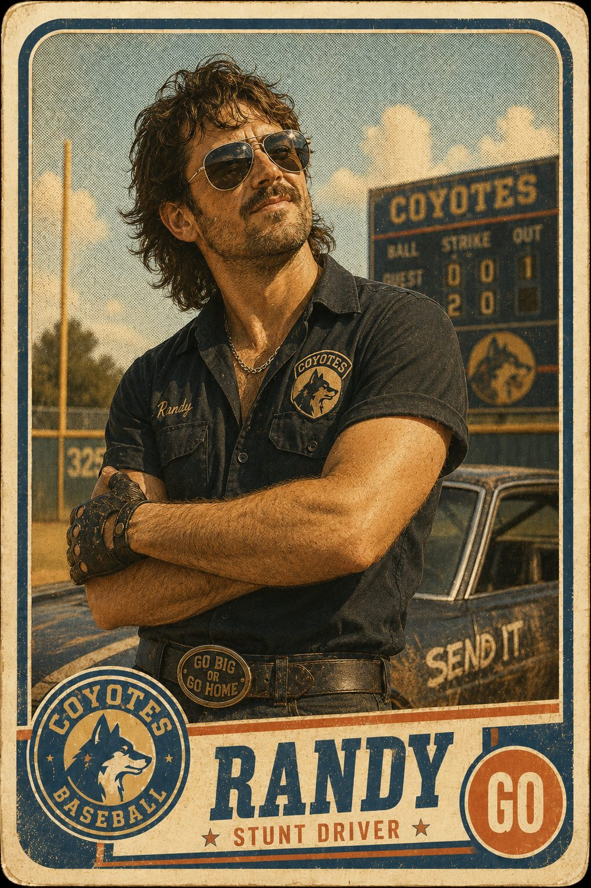
And there's no way in hell a pack of twelve-year-olds beats him to the haul of a lifetime. One whiff of Theo's earlier online sleuthing and Ascher was locked onto them right-quick, shadow-tailing them to the sanitarium, and now eying their every move. His muscle is a pair of quintessential Angelenos — Randy, a car valet who's convinced he's a stunt driver, and Marlon, a barista with a headshot who method-acts his way through every minute of his life. They're ridiculous, overly caffeinated, and far more dangerous than they look.

Soon enough, the Coyotes are back on the hunt — but this time Ascher and his cronies are breathing down their necks, ready to break necks if that's what it takes to claim the booty for themselves.
 Stealing Signs
Stealing Signs
Getting into Dodger Stadium is a heist of Mission Impossible proportions. And this go round, older teenaged Coyotes who once chased the legend are along for the ride, lending a hand to our home-field heroes. Vendor schedules, Dodger Dog carts, 3D-printed disguises, and a drone diversion make for the pearly gates of Blue Heaven swinging wide open for them. Theo pats himself on the back, "Grand slam, baby."
Inside, what no fan ever sees — a speakeasy hidden behind a wall of lockers, a haunted Japanese garden, and vaulted memorabilia that might be worth more than the very treasure they're hunting. But Ascher catches their scent and the stadium guts quickly turn into a battlefield.
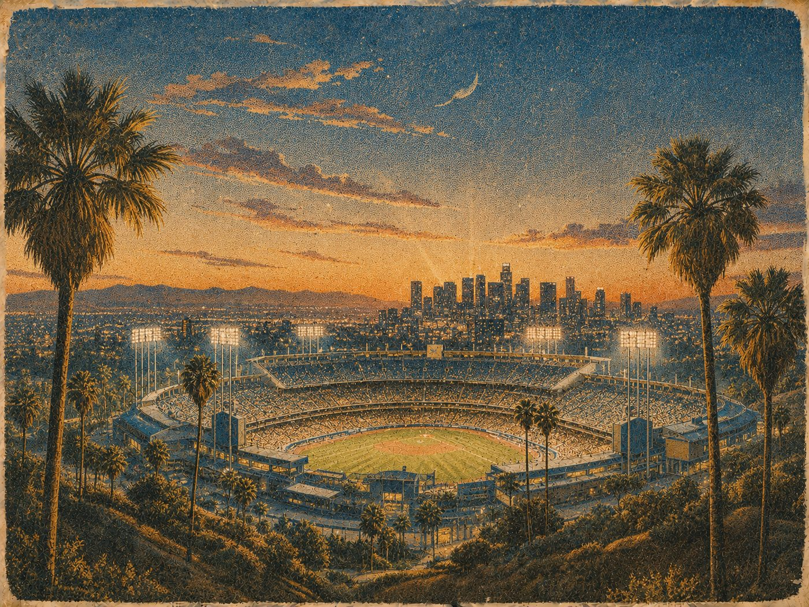
The Coyotes fight the only way they know how — Big Show style. It's Home Alone with bats: pitching machines rigged into cannons, batting nets strung as tripwire, and the infield rain tarp rolled down a corridor like a wave…sending Ascher's men to their butts, covered in tiny helmets and nacho cheese. Chef's kiss.
When the chase spills above ground, our crew tears down the concrete channel of the LA River on bikes and skateboards, howling as they go…with the next piece of the puzzle secured. They make it back to the Den just as the ump waves them onto the field for their next unwinnable playoff game…
 Seventh Inning Stretch
Seventh Inning Stretch
The whole canyon has turned out — packed bleachers, car horns, posters and coyote masks…a neighborhood that hasn't had a team to root for in years. Old timers who used to play on this same field are back in the stands; neighbors who rarely say hello are suddenly arm-in-arm, screaming the team chant.
Against all odds, our team finds a synchronicity that defies all rational explanation. Either the medallion is working its magic…or maybe, just maybe, they're creating the magic themselves, truly becoming a pack. Cooperative, territorial, and not afraid to show a little teeth.
But the curse is far from lifted…While they're knocking it out of the park, Ascher and crew ransack Theo's house and make off with the map and the medallion.
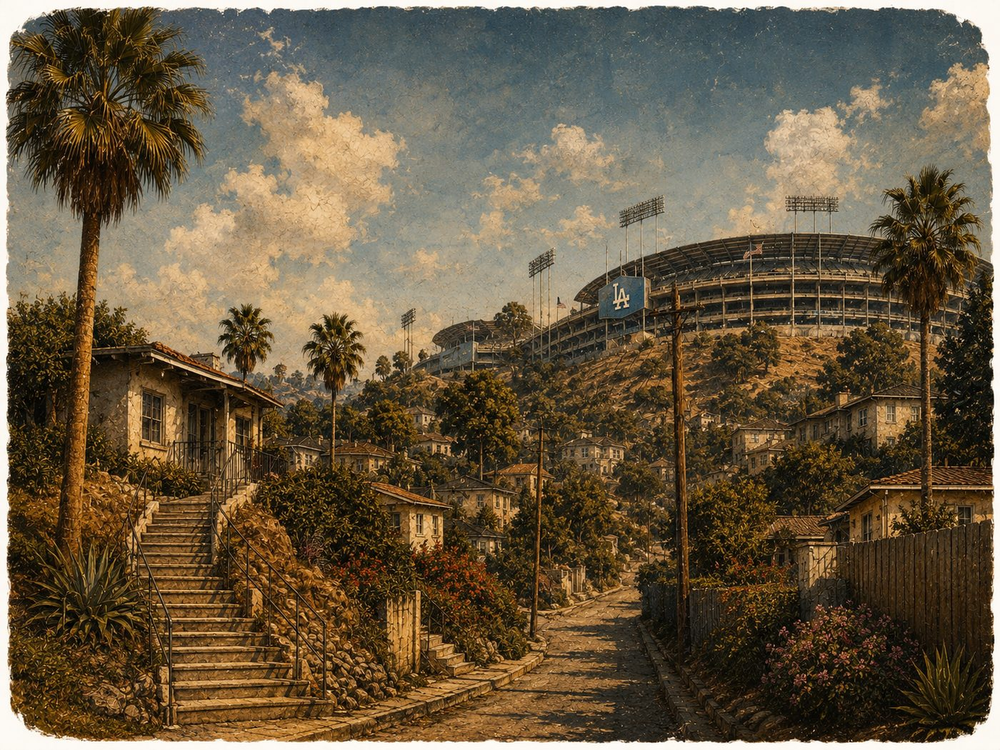
 Last Strike
Last Strike
The hunt had been a place to emotionally hide — from Danny's packed boxes, the fights through Sadie's bedroom wall, Eli's fractured relationship with Sal, their clubhouse that's about to be demolished…
But it all returns to the surface when Ascher anonymously leaks footage of the kids breaking into Dodger Stadium, causing mayhem, vandalizing equipment. Cops pay a visit, parents are livid, the league threatens suspension, Sal is forced to resign. Danny's family opts to leave town sooner, Sadie becomes one more thing for her parents to fight about, and Theo's mom yanks him off the team. They've lost the map, the medallion, and now each other.
 Extra Innings
Extra Innings
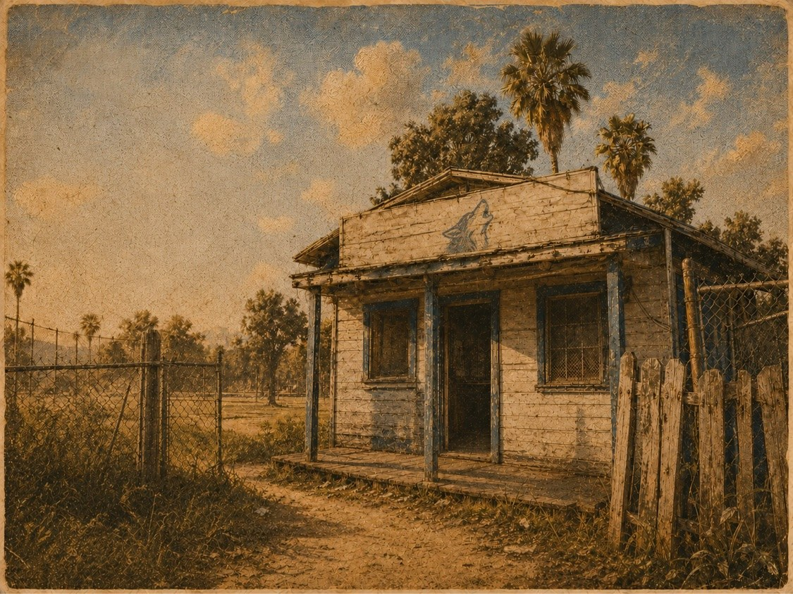
But Eli isn't deterred and Theo, being Theo, made backups of his backup. Armed with a newfound clue from the stadium, they crack the final code and secretly call for a pack meeting…where they announce that they know exactly where the treasure is. Well, almost exactly.
The last piece of the puzzle requires them to line up two markers in the hills, an old surveyor's trick. And the geographical touchstones only align from one precise location at 4:44 PM — representing the 44 original settlers who founded Los Angeles in 1781. And the location? The dead center of Dodger Field. Where a kid has no business standing, ever. Except for one day a year. During the city Little League Championship. If he or she happens to be playing.
So a team that's barely ever won anything has to lock in its last playoff game to get there. To make matters worse, the Breakers, their rich westside arch-rivals, are poaching Wyatt and Weston, the star twins, with promises of high school scholarships and real college hopes. Their parents aren't exactly saying no. With the twins, the Coyotes were a long shot. Without them, they're long dead.
 Bottom of the Ninth
Bottom of the Ninth
Even if the Coyotes somehow pull off the impossible, we end right where we started — on a baseball field with best friends. Championship game above. Ascher closing in below. Bulldozers parked outside the Den. An entire neighborhood desperate for a little-big win.
It all comes down to one heart-wrenching choice. Bottom of the ninth, the team's counting on Eli at the plate if they're going to win it. But Theo and Danny need him underground before Ascher gets away with murder, almost quite literally. For a kid who's never quite figured out how to make his dad proud, there's no good answer. One last swing will decide which treasure he'll have to live without.
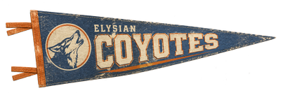